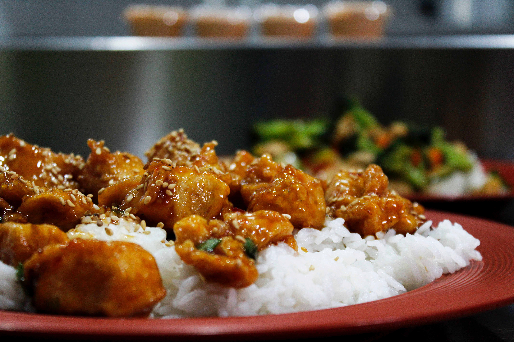
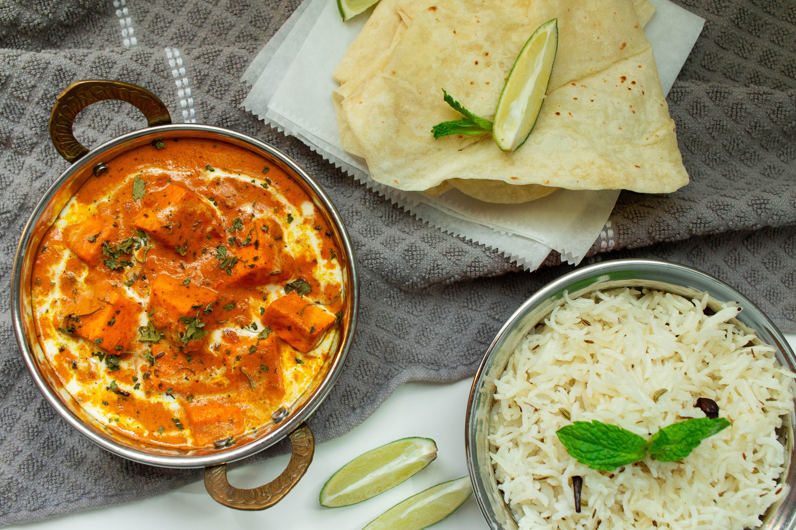

When they say cooking is just a chemical process at the end of the day, they were right. The level of science that goes into making our food taste delicious is way over my head. What I remember from high school chemistry class is the importance of following the instructions to a T if you want to recreate a result. Cooking is a bit different in this sense though. I rarely make a dish the same way twice. Each dish is a new opportunity for me to put on my lab coat and experiment with slight variations.
The recipes on this page are all dishes I’ve made more than once. The key here is to recognize that these recipes are simply guidelines for you to follow. Feel free to step outside them and play a bit with the level of seasoning, the cook times, and the types of ingredients. You might just find that your way is better than mine. If that’s the case, be sure to share your recipe with the rest of us. Don’t be stingy!
Chinese



Indian



Italian